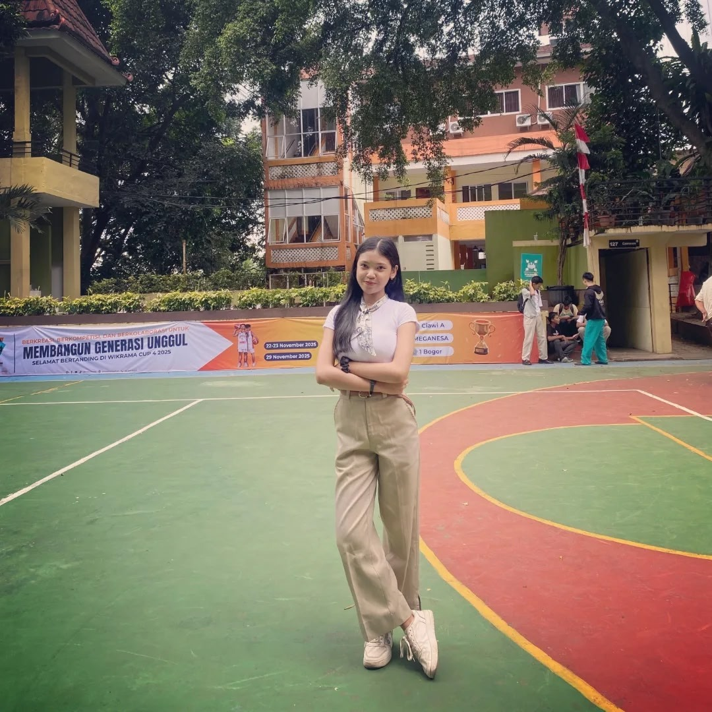
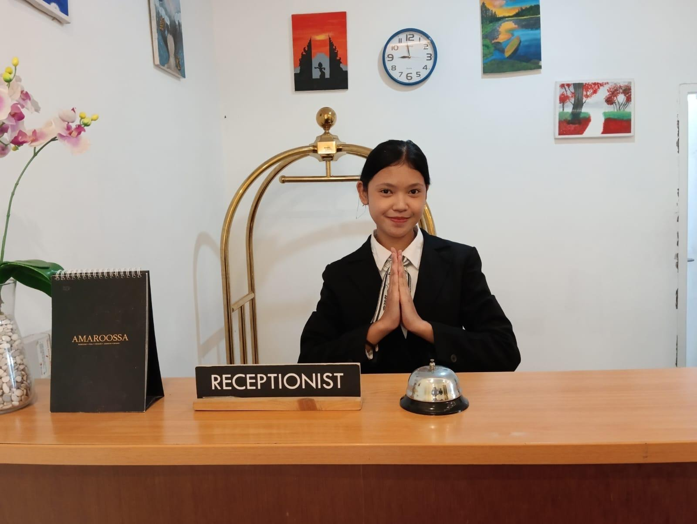
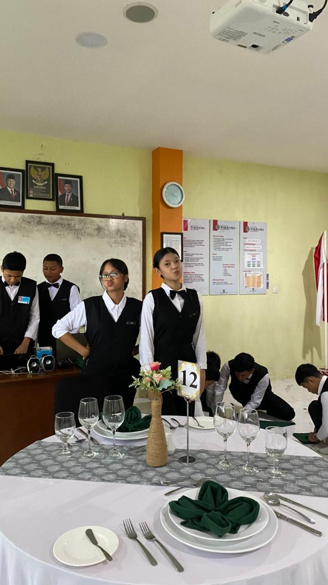
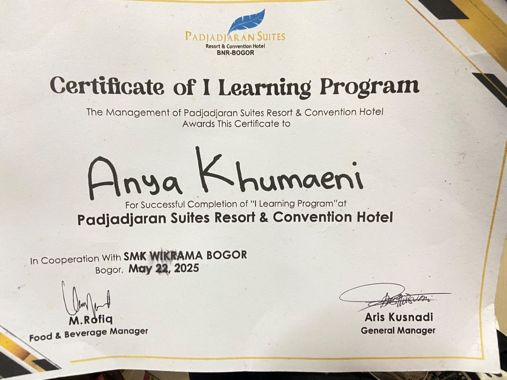
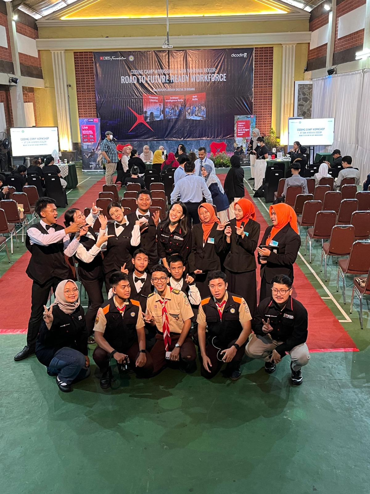
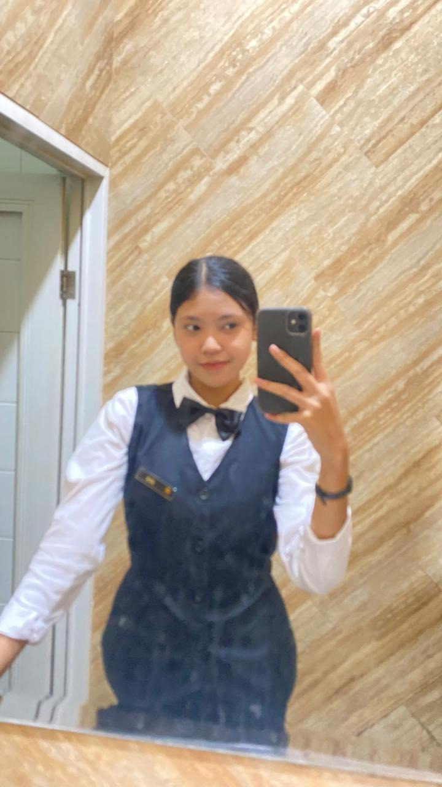

PORTOFOLIO
Saya adalah seorang calon profesional di bidang perhotelan yang memiliki minat dan dedikasi tinggi terhadap industri hospitality, khususnya pada departemen Front Office dan Food & Beverage. Saya memiliki kemampuan komunikasi yang baik, berorientasi pada pelayanan, serta mampu berinteraksi dengan tamu secara profesional dan ramah. Selain itu, saya terbiasa bekerja secara disiplin, bertanggung jawab, dan mampu beradaptasi dengan lingkungan kerja yang dinamis. Dengan semangat belajar yang tinggi serta komitmen untuk memberikan pelayanan terbaik, saya siap mengembangkan kompetensi dan berkontribusi secara positif dalam mendukung operasional dan kualitas layanan di industri perhotelan.





Melaksanakan simulasi operasional Front Office hotel yang meliputi proses reservasi kamar, check-in dan check-out tamu, penanganan permintaan serta keluhan tamu, pengelolaan administrasi tamu, dan penggunaan standar pelayanan sesuai prosedur industri perhotelan. Proyek ini bertujuan untuk mengembangkan keterampilan komunikasi, pelayanan pelanggan, administrasi, serta kemampuan pemecahan masalah dalam lingkungan kerja hospitality.
Melaksanakan simulasi operasional Food and Beverage: Service hotel yang meliputi proses Table set-up, Proses pelayanan service, penanganan permintaan, pengelolaan Table, dan penggunaan standar pelayanan sesuai prosedur industri perhotelan. Proyek ini bertujuan untuk mengembangkan keterampilan komunikasi, pelayanan pelanggan, administrasi, serta kemampuan pemecahan masalah dalam lingkungan kerja hospitality.